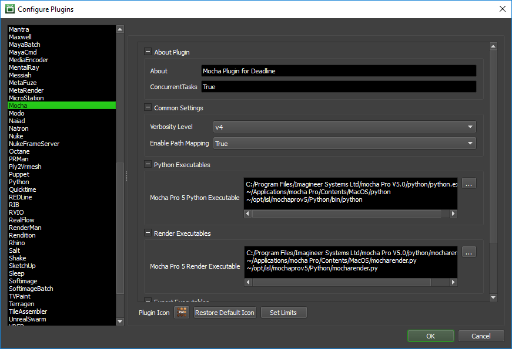

Mocha Pro¶
Job Submission¶
You can submit jobs from within Mocha Pro by installing the integrated submission script, or you can submit them from the Monitor. The instructions for installing the integrated submission script can be found further down this page.
To submit from within Mocha Pro, select ‘Submit To Deadline’ from the Deadline menu.
Submission Options¶

The general Deadline options are explained in the Job Submission documentation, and the Draft/Integration options are explained in the Draft and Integration documentation.
The Mocha Pro specific options are:
Common Options
Version: The version of Mocha Pro to render/export with.
Submit Mocha Project File With Job: If this option is enabled, the project file will be submitted with the job, and then copied locally to the Worker machine during rendering.
Mocha Project File: The Mocha Pro project to be rendered/exported. If the file’s location is not directly accessible by the Worker(s), you need to check ‘Submit Mocha Project File With Job’.
Output Directory: The directory where the render/export output will be written to. The location must be accessible by the Worker(s).
Frame Index Width: The number of digits allocated for the index portion of the file name. If the number is not large enough to accomodate all output frame indices, it will be ignored and the minimum required number of digits will be used instead.
Frame Offset: If the project frame range does not start with 0, please specify the offset.
Job Type: One of the two basic job types Mocha Pro supports, render or export.
Job Sub Type: Available job sub types depend on the job type.
Render Options
File Extension: The output file extension.
Clip View Index: By default, this is zero (0), but if you are working with a multi-view clip, you can set the index here. In stereo mode, Left and Right views are 0 and 1 respectively.
Output Prefix: The output prefix goes before the frame number in the file name.
Output Suffix: The output suffix goes after the frame number in the file name.
- Layers: The layers to render. When specifying which layers to render, follow these rules:
if you want to render all layers inside a group, put the group name followed by a colon (e.g. myGroup:)
if you want to render only some layers inside a group, put the group name followed by a colon and then list group’s individual layer names separating them by a comma (e.g. myGroup: layer1, layer2)
if you want to render ungrouped layers, list their names separating them by a comma (layer1, layer2)
you can render multiple groups as well as ungrouped layers but you must specify one group per line and have ungrouped layers on a separate line
Export Options
Exporter Name: The name of the exporter. The exporters list can be accessed in <repository>/plugins/Mocha/Exporters.txt.
File Name: The exporter output file name. Please include the file extension applicable for the selected exporter.
View Names: List of names or abbreviations of views to export (use comma as the delimiter). When in stereo mode, Left(L) will be used by default.
Frame Time: The frame time argument is used when working with tracking data exporters.
Colorize: Used to export the colored version of the mattes.
Remove Lens Distortion: Mimes the Remove Lens Distortion checkbox of the Export Tracking Data dialog.
Stabilize: Mimes the Stabilize checkbox of the Export Tracking Data dialog.
Invert: Mimes the Invert checkbox in Mocha’s Export Tracking Data dialog.
Please note that Rendered Shapes, while being an exporter type, uses a mix of the usual render and export options.
Plugin Configuration¶
You can configure the Mocha Pro plugin settings from the Monitor. While in power user mode, select Tools -> Configure Plugins and select the Mocha plugin from the list on the left.
Python Executables: Mocha’s custom version of Python.
Mocha Render Executables: Mocha’s executable used for the render jobs.
Mocha Export Executables: Mocha’s executable used for the export jobs.
Please note that if you have Mocha Pro installed on different platforms, you will need to provide multiple paths on separate lines to accommodate for different locations of the executables.
Common Settings
- Verbosity Level: Defines the depth of log output Mocha Pro provides. The levels:
- v0: Critical (this level is always enabled)v1: Errorsv2: Warningsv3: Infov4: Debug
Enable Path Mapping: If enabled, a temporary Mocha file will be created locally on the Worker for rendering and Deadline will do path mapping directly in the Mocha file. Note that this feature can be switched off if there are no path mapping entries defined in Repository Options.
Integrated Submission Script Setup¶
The following procedures describe how to install the integrated Mocha Pro submission script. This script allows for submitting Mocha’s render and export jobs to Deadline directly from within the Mocha Pro editing GUI.
You can either run the Submitter installer or manually install the submission script.
Submitter Installer¶
Run the Submitter Installer located at
<repository>/submission/Mocha/Installers.
Manual Installation¶
Copy
[repository]/submission/Mocha/Client/DeadlineMochaClient.pyto the Mocha’s Script folder. When Mocha Pro is installed, by default the folder gets created here:Windows:
C:/Users/<username>/AppData/Roaming/Imagineer Systems Ltd/ScriptsmacOS:
~/Library/Application Support/Imagineer Systems Ltd/ScriptsLinux:
~/.config/Imagineer Systems Ltd/Scripts
In the Scripts folder, there should a file called init.py. If it doesn’t exist, create it.
Add the following lines to init.py:
import DeadlineMochaClient DeadlineMochaClient.main()
Verify Installation¶
The next time you launch Mocha Pro, there should be a Deadline menu with the option to Submit to Deadline.
FAQ¶
Which versions of Mocha Pro are supported?
Mocha Pro 5
On which platforms is Mocha Pro supported?
Mocha Pro 5 is supported on Windows, macOS, and Linux.
How can I modify the list of available exporters?
Navigate to Mocha’s export executable which can found in Mocha’s installation directory, and by default is located at:
Windows:
C:/Program Files/Imagineer Systems Ltd/<MochaProVersionFolder>/PythonmacOS:
~/Applications/<MochaProVersionFolder>/Contents/MacOSLinux:
~/opt/isl/<MochaProVersionFolder>/Python
Open terminal (command line prompt) and execute mochaexport.py via Python with “-L” flag:
python mochaexport.py -L
The command should print a list of available exporters. Copy and past them into Exporters.txt which can be found in
<repository>/plugins/Mocha.If you wish, you can add custom exporters under title ‘Custom data exporters’.
Error Messages and Meanings¶
This is a collection of known Mocha error messages and their meanings, as well as possible solutions. We want to keep this list as up to date as possible, so if you run into an error message that isn’t listed here, please visit the Thinkbox Help Centre and let us know.
Currently, no error messages have been reported for this plugin.

{kind=link}
{kind=link}
{kind=link}
{kind=link}
{kind=link}